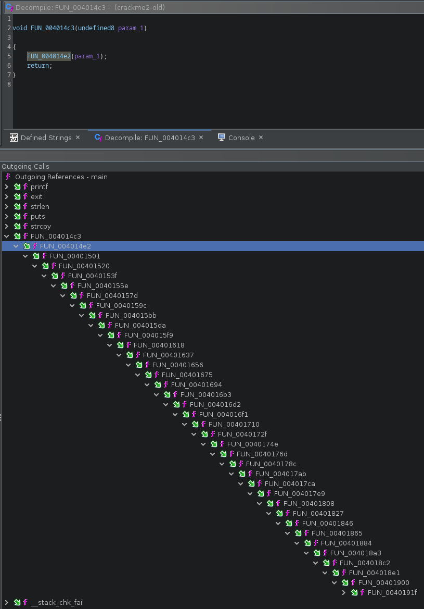

Grey Cat the Flag CTF 2023 - Crackme2
Grey Cat The Flag CTF 2023 had some nice reversing challenges, this one was very nice and i think deserves a small writeup.
You can grab the original file here. A fixed version was later released fixed, but i used the original binary.
1. Quick Recon
it’s a 64 bits ELF that takes the flag as input
% file crackme2
crackme2: ELF 64-bit LSB executable, x86-64, version 1 (SYSV), dynamically linked, interpreter /lib64/ld-linux-x86-64.so.2, BuildID[sha1]=ef9a4ed8207e6b5b4ff62a6c5e140a5059d6d067, for GNU/Linux 3.2.0, stripped
% ./crackme2
Usage: ./crackme2 [greyctf{...}]
also we can notice there’s some antidebug as it’s attempting to ptrace itself, so we’ll probably have to deal with it
% strace -e trace=ptrace ./crackme2 bla
ptrace(PTRACE_TRACEME) = -1 EPERM (Operation not permitted)
--- SIGSEGV {si_signo=SIGSEGV, si_code=SI_KERNEL, si_addr=NULL} ---
+++ killed by SIGSEGV +++
zsh: segmentation fault strace -e trace=ptrace ./crackme2 bla
the segfault is due to the original binary being slightly broken but is not an issue.
main is nothing fancy but we can notice the input flag is copied to the stack:
undefined8 main(int argc,char **argv)
{
uint uVar1;
size_t len;
long in_FS_OFFSET;
char flag [136];
long local_10;
if (argc != 2) {
printf("Usage: %s [greyctf{...}]\n",*argv);
/* WARNING: Subroutine does not return */
exit(0);
}
len = strlen(argv[1]);
if (0x7f < len) {
puts("The flag isn\'t so long. You will overflow the program...");
}
/* copy input flag on the stack */
strcpy(flag,argv[1]);
/* meat must be here */
uVar1 = FUN_004014c3(0);
printf("%d\n",(ulong)uVar1);
return 0;
}
everything must happen during the call to FUN_004014c3 however it’s a very long chain of function calls (lot of FUN…. :p):

so we can work backward instead: find an interesting string like "Wrong flag :(" and walk the XREF up to 00401350:
void execute_mess(void)
{
int iVar1;
void *__addr;
__addr = (void *)syscall_mmap(0,0x1000,7,0x22,0xffffffff,0);
if (__addr == (void *)0xffffffffffffffff) {
wrong_flag();
}
dyn_call(__addr,0x38c);
iVar1 = munmap(__addr,0x1000);
if (iVar1 == -1) {
wrong_flag();
}
return;
}
2. Understanding what’s happening
it starts by allocating a RWX region using mmap. It’s not using the library function, but the syscall instead:
syscall_mmap
00401232 f3 0f 1e fa ENDBR64
00401236 55 PUSH RBP
00401237 48 89 e5 MOV RBP,RSP
0040123a 48 89 7d e8 MOV qword ptr [RBP + local_20],RDI
0040123e 48 89 75 e0 MOV qword ptr [RBP + local_28],RSI
00401242 89 55 dc MOV dword ptr [RBP + local_2c],EDX
00401245 89 4d d8 MOV dword ptr [RBP + local_30],ECX
00401248 44 89 45 d4 MOV dword ptr [RBP + local_34],R8D
0040124c 4c 89 4d c8 MOV qword ptr [RBP + local_40],R9
00401250 49 89 ca MOV R10,RCX
; 0x9 is syscall for mmap (https://filippo.io/linux-syscall-table/)
00401253 48 c7 c0 09 00 00 00 MOV RAX,0x9
0040125a 0f 05 SYSCALL
0040125c 48 89 c1 MOV RCX,RAX
0040125f 48 89 4d f8 MOV qword ptr [RBP + local_10],RCX
00401263 48 8b 45 f8 MOV RAX,qword ptr [RBP + local_10]
00401267 5d POP RBP
00401268 c3 RET
then it loops over and over decrypting and executing some code:
void dyn_call(code *mmap_mem,undefined4 idx)
{
undefined4 index;
undefined4 key;
key = 0xad23773b;
index = idx;
do {
decrypt_code(mmap_mem,key,index);
/* actually returns both index and key for next round */
index = (*mmap_mem)();
} while( true );
}
void decrypt_code(void *table,uint key,int offset)
{
ulong i;
uint size;
size = ENCRYPTED_CODE[offset];
for (i = 0; i < size; i = i + 1) {
*(dword *)((long)table + i * 4) = ENCRYPTED_CODE[i + (long)(offset + 1)] ^ key;
}
return;
}
decrypt_code takes a XOR key and offset into an array we call ENCRYPTED_CODE and decrypt+copy into the mmap’ed region.
We can use a small GDB script to trace calls to decrypt_code and dump xor keys and offsets:
import gdb
def read_reg(reg):
return gdb.parse_and_eval("${}".format(reg))
fd = open("trace_crack2.txt", "w")
gdb.execute('break *0x40133b') # call decrypt_code
gdb.execute('run aaaaaaaaaaaaaaaaaaaaaaaaaaaaaaaaaaaaaaa')
while 1:
key = int(read_reg('esi')) & 0xffffffff
idx = int(read_reg('edx'))
if idx < 0:
break
print("key 0x%x idx 0x%x"%(key, idx))
fd.write("key 0x%x idx 0x%x\n"%(key, idx))
gdb.execute("continue")
which produces a trace like that:
key 0xad23773b idx 0x38c
key 0x92d26427 idx 0x3c3
key 0x1411f6c3 idx 0x3ff
key 0x69cbae50 idx 0x446
key 0x7332a93 idx 0x477
key 0x93efb281 idx 0x4ad
key 0xe23f1d80 idx 0x4e6
key 0xceb1956e idx 0x517
key 0xab7f0423 idx 0x54a
key 0x565118bb idx 0x57f
key 0xd99d45a idx 0x5b7
key 0x5601610d idx 0x5ef
key 0xb38a2126 idx 0x62a
key 0x1cf5510b idx 0x670
key 0x83125f0c idx 0x6a0
key 0xd48c0a3a idx 0x6d9
key 0xe89cc9cd idx 0x4
which can be used by this script to decrypt and disassemble the code:
import sys
from pwn import *
from capstone import *
# encrypted code region
CODE_OFFSET = 0xc0a0
CODE_SIZE = 0x10000
def disasm(code):
md = Cs(CS_ARCH_X86, CS_MODE_64)
for i in md.disasm(code, 0x0):
print("0x%x:\t%s\t%s" %(i.address, i.mnemonic, i.op_str))
def dec(data, key, sz):
key = p32(key)
size = data[sz*4] # read size
code = xor(key, data[(sz+1)*4:(sz+1+size)*4])
disasm(code)
# read encrypted code from binary
with open(sys.argv[1], "rb") as fp:
fp.seek(CODE_OFFSET)
data = fp.read(CODE_SIZE)
with open("trace_crack2.txt") as fp:
for line in fp:
line = line.split()
key = int(line[1][2:], 16)
idx = int(line[3][2:], 16)
print("\n\n\n")
print("bloc: 0x%x 0x%x"%(idx, key))
dec(data, key, idx)
the decrypted code clearly looks obfuscated:
bloc: 0x38c 0xad23773b
0x0: mov rdx, 0x3689bc0d
0x7: movabs rdi, 0x864e55d5
0x11: xor rdi, rdx
0x14: mov rbx, 0x1471e32d
0x1b: sub rbx, rdi
0x1e: movabs r10, 0xe9d3019e
0x28: sub r10, rbx
0x2b: mov rsi, 0x9f3a96e
0x32: sub rsi, r10
0x35: mov rbx, 0x5bcaf507
0x3c: xor rbx, rsi
0x3f: movabs r10, 0xafdf5a79
0x49: xor r10, rbx
0x4c: mov r8, 0x2a3bfde6
0x53: add r8, r10
0x56: mov rsi, 0x32b2ae6b
0x5d: sub rsi, r8
0x60: movabs rax, 0x19097a1e9
0x6a: xor rax, rsi
0x6d: movabs rdx, 0xdd66c684
0x77: movabs rsi, 0xe89e6c60
0x81: add rsi, rdx
0x84: mov rbx, 0x147e8930
0x8b: xor rbx, rsi
0x8e: movabs rsi, 0xfbd886c4
0x98: xor rsi, rbx
0x9b: movabs r9, 0xcb56fcb7
0xa5: xor r9, rsi
0xa8: mov rbx, 0x3e2bc149
0xaf: xor rbx, r9
0xb2: mov rdx, 0x3231b3f7
0xb9: add rdx, rbx
0xbc: movabs r11, 0xad2afb66
0xc6: sub r11, rdx
0xc9: movabs rcx, 0x1f4b71da6
0xd3: add rcx, r11
0xd6: ret
and we can find the ptrace call in there:
bloc: 0x6d9 0xd48c0a3a
0x0: xor edi, edi
0x2: push 0x65 ; ptrace syscall number
0x4: pop rax
0x5: syscall
0x7: mov rsi, rax
0xa: movabs r10, 0xc9d392ed
0x14: movabs rbx, 0xf21ee895
ptrace will return 0 upon success, so one way to circumvent it is to change syscall to xor eax, eax.
Both instructions are the same size:
% rasm2 -b64 'syscall'
0f05
% rasm2 -b64 "xor eax, eax"
31c0
we can use the following script to patch a new binary (not forgetting the XOR):
from pwn import p32
idx = 0x6d9 + 1
xor_key = p32(0xd48c0a3a)
file_offset = 0xc0a0 + idx*4
data = bytearray(open("crackme2", 'rb').read())
# syscall -> xor eax,eax
data[file_offset+5] = 0x31 ^ xor_key[1]
data[file_offset+6] = 0xc0 ^ xor_key[2]
open('crackme2.patch', 'wb').write(data)
if we dump the encrypted code blocs from the patched binary we can validate the change:
bloc: 0x6d9 0xd48c0a3a
0x0: xor edi, edi
0x2: push 0x65
0x4: pop rax
0x5: xor eax, eax ; here
0x7: mov rsi, rax
0xa: movabs r10, 0xc9d392ed
0x14: movabs rbx, 0xf21ee895
0x1e: sub rbx, r10
0x21: movabs r8, 0xa019c58c
0x2b: xor r8, rbx
if we re-run the GDB trace script on the patched binary, the generated trace is much longer and that’s now something we can work on
3. Flag in the haystack
The initial trace was executing 17 encrypted blocs, the new one goes over 125
% wc -l trace_crack2.txt.*
17 trace_crack2.txt.1
125 trace_crack2.txt.2
142 total
that’s both a good and bad news because the assembly is obfuscated by a lot of arithmetic constants unfolding and we need to find how the flag is checked.
We can also generate a new disassembly out of this trace using the same script as before:
% ./dump.py crackme2.patch > trace2.txt
At some point the code needs to load the input flag if it wants to check.
When the decrypted code is called, debugging shows no obvious reference to the input string in any register, however we know from the main function that it’s been copied to the
stack.
We can see some blocks are loading an address relative to the stack, which is already a good lead:
% egrep "bloc|rbp" trace2.txt
[...]
bloc: 0x8d3 0xe2b797ea
0x42: lea rdx, [rbp + rdx]
bloc: 0x97b 0xfe5ddd5e
0x42: lea rbx, [rbp + rbx]
bloc: 0xa14 0x5eb21c2c
0x4b: lea rdx, [rbp + rdx]
bloc: 0xab3 0x44c6f479
0x42: lea r10, [rbp + r10]
[...]
also there must be some kind of conditionnal instruction somewhere to trigger the good or bad message.
Some block contains a cmp instruction, but they are just decoys and here for more confusion.
The before last block of the new trace in interesting as it ends with:
0x1e1: test r12, r12
0x1e4: cmove rdx, rbx
0x1e8: mov rcx, rdx
0x1eb: ret
The CMOVE instruction will move rbx to rdx if r12 == 0. RDX then ends up in ECX which holds the index of the next bloc to run.
If we debug the binary and force r12 to be 0 at this stage, we end up with the winning message, so in order to get the correct flag, we need to end up with r12 == 0.
% grep r12 trace2.txt
0x91: xor r12, r12
0xfb: or r12, rdx
0x12c: or r12, rdx
0xf5: or r12, r11
0x109: or r12, rdx
0x115: or r12, r8
0x106: or r12, rax
0xfa: or r12, r10
0x126: or r12, rdx
0x10b: or r12, rcx
0x108: or r12, r9
0x10b: or r12, rdx
0x104: or r12, r8
0x119: or r12, rdi
0x126: or r12, r10
0x11c: or r12, r9
0x118: or r12, rsi
0x10c: or r12, rdx
0x10e: or r12, rbx
0x119: or r12, r10
0x10e: or r12, r10
0x118: or r12, rdx
0xf1: or r12, rdi
0x10f: or r12, rax
0x109: or r12, rbx
0x128: or r12, rax
0x119: or r12, r10
0xfb: or r12, rbx
0x129: or r12, rcx
0xfa: or r12, r11
0x119: or r12, r11
0x119: or r12, rdi
0x108: or r12, rcx
0x124: or r12, rbx
0x11e: or r12, rbx
0x118: or r12, rsi
0x12c: or r12, r10
0x13c: or r12, rbx
0xfe: or r12, r8
0x119: or r12, r10
0x122: or r12, r10
0xfb: test r12, r12
0x1e1: test r12, r12
it’s first initialized to 0 and sometimes, or’d with another register (which must 0 as well).
starring at the screen, we can notice a recurring pattern in some blocks, like this one:
bloc: 0x165c 0x803ed377
;
; /// skipped some instructions
;
; load input flag string
0x45: lea r9, [rbp + r9]
;
; /// skipped more instructions
;
; load char 'r9' from the input flag string
0xbb: movzx rax, byte ptr [r9 + rbx]
;
; /// skipped even more instructions
;
; do a or with r12
0xfb: or r12, rdx
so if can find these blocks, get the character index that being check (from the movzx instruction) and then manage to get 0 in the or’d register with r12, we should be good to go.
4. Poor man’s ugly emulation
As i’m not familiar enough with miasm or Triton to quickly do what i wanted in my limited available i went down the quick and dirty road:
def emu(self, code):
print("######################")
st = {'r12': 0}
md = Cs(CS_ARCH_X86, CS_MODE_64)
for i in md.disasm(code, 0x0):
op = i.mnemonic
dat = i.op_str.replace(",", "").split()
#print(op, dat)
match i.mnemonic:
case 'mov':
st[dat[0]] = int(dat[1].replace("0x", ""), 16) & 0xffffffff
case 'movabs':
st[dat[0]] = int(dat[1].replace("0x", ""), 16) & 0xffffffff
case 'sub':
st[dat[0]] -= st[dat[1]]
st[dat[0]] &= 0xffffffff
case 'add':
st[dat[0]] += st[dat[1]]
st[dat[0]] &= 0xffffffff
case 'xor':
st[dat[0]] ^= st[dat[1]]
case 'or':
st[dat[0]] |= st[dat[1]]
if dat[0] == 'r12':
# r12 persist and must be 0 for last check to pass
#print(" ---------- R12")
#print(st[dat[1]])
print(st['r12'])
# solve dat[1] == 0
result = self.slv(st[dat[1]], 0)
self.out[pos] = result
print(self.out)
case 'lea':
# load flag
if st[dat[0]] == 16488:
print("load flag")
st[dat[0]] = self.flag
case 'movzx':
# load flag chr index
o1 = dat[-1][:-1]
o2 = dat[-3][1:]
if type(st[o1]) is list:
pos = st[o2]
st[dat[0]] = st[o1][pos]
elif type(st[o2]) is list:
pos = st[o1]
st[dat[0]] = st[o2][pos]
else:
print(op, dat)
print(st)
raise
print("checking flag pos %d"%pos)
I used z3 to symbolize the input flag and then solve the contrains to keep r12 == 0 (which turned out to be quite simple…)
Full script here.
Running the script yields the following output:
% python emu.py
bloc: 0x801 0x3c23c429
######################
bloc: 0x839 0x47569508
######################
[...]
######################
load flag
checking flag pos 5
0 | 100 - f5 & 255
bytearray(b'\x00\x00\x00\x00{d\x00\x00\x00\x00\x00\x00\x00\x00\x00\x00\x00\x00\x00\x00\x00\x00\x00\x00\x00\x00\x00\x00\x00\x00\x00\x00\x00\x00\x00\x00\x00\x00\x00\x00\x00')
bloc: 0x18d3 0x22b364d3
######################
load flag
checking flag pos 39
0 | 125 - f39 & 255
bytearray(b'\x00\x00\x00\x00{d\x00\x00\x00\x00\x00\x00\x00\x00\x00\x00\x00\x00\x00\x00\x00\x00\x00\x00\x00\x00\x00\x00\x00\x00\x00\x00\x00\x00\x00\x00\x00\x00\x00}\x00')
bloc: 0x195d 0xc295cc42
######################
bloc: 0x19b5 0xd7f207a3
######################
load flag
checking flag pos 18
0 | 95 - f18 & 255
bytearray(b'\x00\x00\x00\x00{d\x00\x00\x00\x00\x00\x00\x00\x00\x00\x00\x00\x00_\x00\x00\x00\x00\x00\x00\x00\x00\x00\x00\x00\x00\x00\x00\x00\x00\x00\x00\x00\x00}\x00')
bloc: 0x1a46 0x545b9046
######################
load flag
checking flag pos 9
0 | 121 - f9 & 255
bytearray(b'\x00\x00\x00\x00{d\x00\x00\x00y\x00\x00\x00\x00\x00\x00\x00\x00_\x00\x00\x00\x00\x00\x00\x00\x00\x00\x00\x00\x00\x00\x00\x00\x00\x00\x00\x00\x00}\x00')
[....]
######################
load flag
checking flag pos 17
0 | 51 - f17 & 255
bytearray(b'grey{d1d_y0u_s0lv3_b\x00_emul4t1ng?_1e4b8a}\x00')
bloc: 0x3e51 0x193272c7
######################
load flag
checking flag pos 7
bloc: 0x3ee7 0xd6d30c89
######################
load flag
checking flag pos 20
0 | 121 - f20 & 255
bytearray(b'grey{d1d_y0u_s0lv3_by_emul4t1ng?_1e4b8a}\x00')
bloc: 0x3f84 0xd25edc37
######################
5. Files
- gdb trace script: trace.py
- disassembler: dump.py
- ptrace patcher: patch.py
- emulator: emu.py
- execution trace before ptrace patch: trace_crack2_1.txt + disassembly trace1.txt
- execution trace after ptrace patch: trace_crack2_2.txt + disassembly trace2.txt